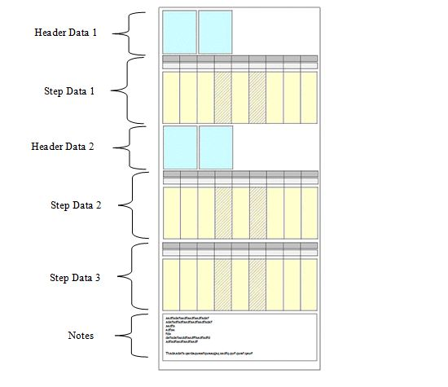
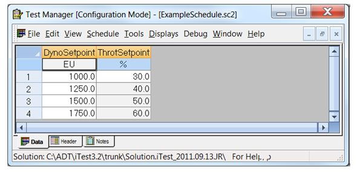
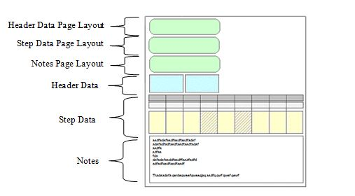
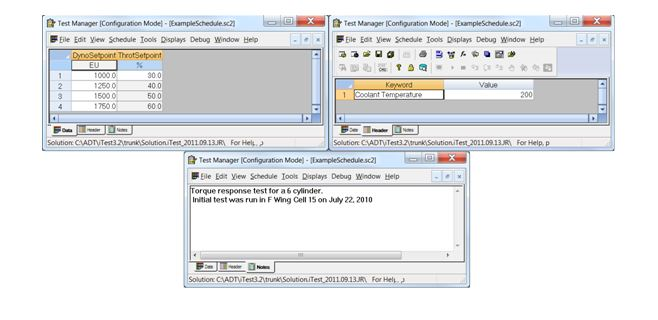
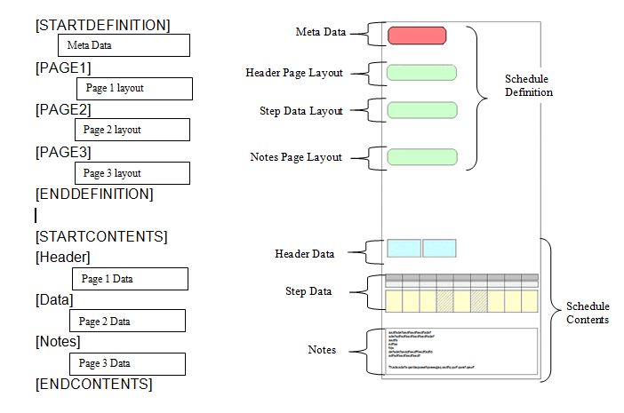
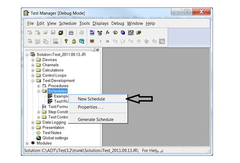
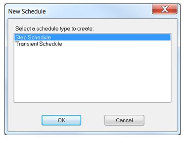
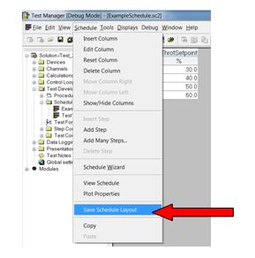
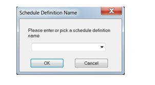
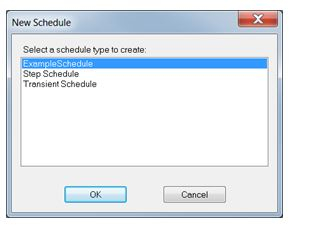

iTest User's Guide
Schedule File Format
Product Version 4.5
Prepared By
ADT Software Engineering
A&D Confidential Document Distributable only to A&D Customers
Copyright A&D Company, Limited
A&D Technology Inc.
The following contains information pertaining to the structure of the iTest schedule (*.SC2) file. The application of schedule files is beyond the scope of this document and will therefore not be discussed.
In general, the purpose of a schedule within the iTest Data Acquisition and Control System is to bring the unit under test and/or the test cell to some user defined state. This state is defined by a series of operating points, commonly know as setpoints. For example, consider commanding a dynamometer to some fixed RPM and the engine throttle position to some fixed percentage. Collectively, these two setpoints would represent a single entry, or step, in the schedule. In most cases, every entry in the schedule would represent a unique operating point. For example, consider the following:
Example
| Setpoint Number | Dyno RPM | Throttle Position |
| 1 | 1000 | 30% |
| 2 | 1250 | 40% |
| 3 | 1500 | 50% |
| 4 | 1750 | 60% |
In this example, the value of RPM and throttle position are different for every step. There are cases, however, where the value of a particular setpoint would be the same for the entire schedule. For example, consider engine coolant temperature as shown below:
Example
| Setpoint Number | Dyno RPM | Throttle Position | Coolant Temperature |
| 1 | 1000 | 30% | 200 ° F |
| 2 | 1250 | 40% | 200 ° F |
| 3 | 1500 | 50% | 200 ° F |
| 4 | 1750 | 60% | 200 ° F |
Given this scenario, one approach would be to include the coolant temperature in each step of the schedule as shown above. In order to reduce the number of columns in the schedule, an alternative solution is available. Rather than include these static setpoints in every step they are separated and "stored" in a different section of the schedule as shown below:
Example: Coolant Temperature = 200° F
| Setpoint Number | Dyno RPM | Throttle Position |
| 1 | 1000 | 30% |
| 2 | 1250 | 40% |
| 3 | 1500 | 50% |
| 4 | 1750 | 60% |
By convention, any setpoint that applies globally to all steps within the schedule are written to the Header as is the case with engine coolant temperature. These items are stored in the Header list in INI file format (<keyword> = <value>).
Finally, there may be a need to include descriptive text within the schedule that details the purpose of the test or anything else deemed appropriate by the user. These "notes" are also included in yet another section of the schedule. For example:
Example: Coolant Temperature = 200° F
| Setpoint Number | Dyno RPM | Throttle Position |
| 1 | 1000 | 30% |
| 2 | 1250 | 40% |
| 3 | 1500 | 50% |
| 4 | 1750 | 60% |
Torque response test for a 6 cylinder. Initial test was run in F Wing Cell 15 on July 22, 2010.
In summary, there are 3 general types of sections within any given schedule:
In fact, these 3 sections are each assigned a generic type, which can be one of the following:
Even though there are three general sections within any given schedule, there is no restriction as to the number of ‘Header Data’ and ‘Step Data’ sections that can be included within a schedule. The number of each of these sections is left to the user’s discretion. For example:
Example

EXCEPTION: The only exception is that there can only be one ‘Notes’ section.
From within Test Manager, these different sections are represented as separate tabs as shown below.
Separate Tabs

To increase the ease of use of schedules within Test Manager, additional functionality has been provided to reduce the length of time required to create new schedules. The properties and configuration of the individual columns in the case of the ‘Step Data’ pages, and the properties of the items in the ‘Header Data’ pages can also be stored within the schedule file. For example, the user may wish to include a column within the schedule where all cells within that column presents the user with a drop-down list of RDB channels when selected. There are many such properties, all of which will be discussed in later sections of this document. Suffice it to say at this point, that each page, (‘Header’, ‘Step’, and ‘Notes’) has a corresponding section within the schedule that contains the ‘Page Layout’ information. Consider the following:
Page Layout

Lastly, there is one additional section of the schedule file that must be introduced. Given the flexible nature of the schedule file’s layout, an additional section of information is required that describes the schedule in its entirety. This ‘Meta Data’ describes the remaining data in the schedule file (e.g., the number of pages) and is included at the very top of the schedule file.
When the schedule file is read by Test Manager, the Meta Data is read first to determine the number of pages. Each page layout section is then read in order to create the correct number and type of pages. Finally, each page's data is read and applied to its corresponding page layout.
In summary, a schedule file will be comprised of the following:
Where:
What follows is a detailed description of all the component sections of a schedule file along with a description of the section identifiers used to write these different sections to file and how these identifiers are then used to read the schedule back from file. The example from Section 2.1 will be used throughout the remainder of this section to illustrate the schedule file format.
Example: Coolant Temperature = 200° F
| Setpoint Number | Dyno RPM | Throttle Position |
| 1 | 1000 | 30% |
| 2 | 1250 | 40% |
| 3 | 1500 | 50% |
| 4 | 1750 | 60% |
Torque response test for a 6 cylinder. Initial test was run in F Wing Cell 15 on July 22, 2010.
This would appear as follow as viewed from Test Manager:
Torque Response Test

The actual schedule file would contain the following general sections:
[STARTDEFINITION] definitiontype= SCHEDULE definitionname= Step Schedule pagecount= 3 [PAGE1] pagetype= LIST name= Header Parameters=1 ColumnDefFields= Channel, Type, Required, Default, Description, Runtime Show, Lock Column, Allow Edit, TM Hide , Col Width Parameter.1= "Coolant Temperature" INT 0 EMPTYSTRING "Coolant Temperature" 1 0 1 0 -1.00000 [PAGE2] pagetype= MATRIX name= Data Columns=2 ColumnDefFields= Channel, Type, Required, Default, Description, Runtime Show, Lock Column, Allow Edit, TM Hide , Col Width Column.1= "valDt1DynoSchSetpoint" NUM 0 0 "DynoSetpoint" 1 0 1 0 -1.0000 Column.2= "valDt1ThrotSchSetpoint" NUM 0 0 "ThrotSetpoint" 1 0 1 0 -1.0000 [PAGE3] pagetype= NOTE name= Notes [ENDDEFINITION] [STARTCONTENTS] [Header] Coolant Temperature= 200 [Data] valDt1DynoSchSetpoint valDt1ThrotSchSetpoint EU % 1000.0 30.0 1250.0 40.0 1500.0 50.0 1750.0 60.0 [Notes] Torque response test for a 6 cylinder. Initial test was run in F Wing Cell 15 on July 22, 2010 [ENDCONTENTS]
At the highest level, the schedule file contains two main sections: the schedule definition and the schedule contents.
Section Identifiers

This section is delimited by the [STARTDEFINITION] – [ENDDEFINITION] section identifiers. It contains the Meta Data and Page Layout information. There is no restriction on the number of page definitions with the exception that there is only one ‘Meta Data’ page and one ‘Notes’ page
This section is delimited by the [STARTCONTENTS] – [ENDCONTENTS] section identifiers. It contains the actual data associated with each page. In the case of a ‘Step Data’ page, it contains the list of setpoint values for each step in the schedule. For ‘Header Data’ pages, it contains the list of <keyword> = <value> combinations. For the ‘Notes’ page it simply contains the actual text that are the notes for this schedule.
The purpose of this section is to describe at a very high level how Test Manager parses the Schedule file. It is not intended to describe in detail the contents of the various sections of a schedule file. Please refer to Section 3.2 for more detailed information.
When Test Manager reads the schedule file, it begins with the Meta Data found in the Schedule Definition. It will discover the number of pages, n, associated with the schedule by reading the <pagecount> keyword found in the Meta Data. Then it will read each of the n page’s layout sections, [PAGE1] through [PAGEn], in turn to discover the configuration and layout of those pages. Each page layout has an entry that defines the type and name of that specific page. It is through the use of this name that Test Manager establishes the relationship between a page’s layout and its contents. In our example for PAGE1, name=Header and its pagetype=LIST. Using this information Test Manager knows to look for a section in the Schedule Contents section of the file labeled [Header].
Once again, our simple example will be used to describe each sections format specification.
Example:
[STARTDEFINITION] definitiontype= SCHEDULE definitionname= Step Schedule pagecount= 3
Where:
Opening section identifier = [STARTDEFINITION]
Keyword Descriptions
| Keyword | Description |
| definitiontype | The type of schedule contained within the file. Can be one of the following: - Schedule - Systable - Table - Batterytype |
| definitionname | The name associated with this schedule (Please see Section 4.1 under Advance topics) |
| pagecount | The number of pages in the schedule |
Example:
[PAGE1] pagetype= LIST name= Header Parameters=1 ColumnDefFields= Channel, Type, Required, Default, Description, Runtime Show, Lock Column, Allow Edit, TM Hide, Col Width Parameter.1= "Coolant Temperature" INT 0 EMPTYSTRING "Coolant Temperature" 1 0 1 0
Where:
Opening section identifier = [PAGEn]
Keyword Descriptions
| Keyword | Description |
| pagetype | The type of schedule. ‘LIST’ in the case of a Header Data page. |
| name | The name of this page. It will appear on the tab for this page as seen within Test Manager. |
| Parameters | The number of <keyword>=<value> pairs in the LIST. This will define the number of lines in the LIST page. |
| ColumnDefFields | Although not used by iTest to parse the file, this entry is used by users reading the file in a text editor such as Notepad. It defines the meaning of the individual entries in each ‘Parameter’ definition as defined below. - Channel – The <keyword> name for this entry. - Type – The type of entry. See below for details. - Required – If marked as required, the entry cannot be deleted. - Default – Default value. - Description – Does not apply to LIST pages. EMPTYSTRING by default. - Runtime Show – Show this entry while running in iTest. If this value is set to 0, then a visual indication will be available while editing the schedule. In Test Manager, this visual indication is the applicable row being grayed out. In SolutionBuilder, this visual indication is the icon in the row. - Lock Column – Prevent the row value from being changed through a runtime editor. - Allow Edit – Allow user to edit entry. If this value is set to 0, then a visual indication will be available while editing the schedule. This visual indication is the applicable entry being displayed in gray font. - TM Hide – Does not apply to LIST pages. - Col Width – Does not apply to LIST pages. -1 by default. |
| Parameter.n | The actual entries in the LIST with properties as defined by the ColumnDefFields. |
Parameter Type Descriptions
| Parameter Type | Description | Validation/Notes |
| Numeric | A numeric type parameter. | - |
| Integer | An integer type parameter. | - |
| Time | A time type parameter. | - |
| Text | A text type parameter. | - |
| TimeText | A time entry with colons, as needed (e.g., 00:00:00). | - |
| TimeTextFull | A time entry in the format of 000:00:00.00. |
- |
| Limit File List | A pick list of limit file (.lim) selections. | Only available in SolutionBuilder for non-BTS solutions. |
| Data Log | A picklist of data log selections. | - |
| User Defined List | A picklist of user defined entries. | The list entry is semi-colon delimited (e.g., TRUE;FALSE). |
| Generic File List | A picklist of file selections. | The list entry must be a fully qualified path. $ substitutions are allowed in the file specification. |
| Generic Function List | A picklist of VCL procedure selections. It is intended that the VCL procedure return a value or string. | The list entry must be a fully qualified path. $ substitutions are allowed in the file specification. Use of wildcards is supported. E.g., $SUPPORTDIR\Test\SysFunctions\*.tsc. |
| User Picklist | A picklist of items in a picklist file (.pkl). | Users can select an option from the list. The picklist file must reside in the active support directory. |
| Editable User Picklist | A generic input parameter. Also provides a pick list of items from a picklist file (.pkl) residing in the active support directory. | User can either manually type in an entry or select from the list. |
Example
[PAGE2] pagetype= MATRIX name= Data Columns=2 ColumnDefFields= Channel, Type, Required, Default, Description, Runtime Show, Lock Column, Allow Edit, TM Hide , Col Width Column.1= "valDt1DynoSchSetpoint" NUM 0 0 "DynoSetpoint" 1 0 1 0 -1.0000 Column.2= "valDt1ThrotSchSetpoint" NUM 0 0 "ThrotSetpoint" 1 0 1 0 -1.0000
Keyword Descriptions
| Keyword | Description |
| pagetype | The type of schedule. ‘MATRIX’ in the case of a Step Data page. |
| name | The name of this page. It will appear on the tab for this page as seen within Test Manager. |
| Columns | The number columns in the MATRIX. |
| ColumnDefFields | Although not used by iTest to parse the file, this entry is used by users reading the file in a text editor such as Notepad. It defines the meaning of the individual entries in each ‘Column’ definition as defined below. - Channel – The RDB channel tied to this column. - Type – The type of entry. See below for details. - Required – If marked as required, the column cannot be deleted. - Default – Default value. - Description – The title of the column as it appears in Test Manager or iTest. - Runtime Show – Show this entry while running in iTest. If this value is set to 0, then a visual indication will be available while editing the schedule. In Test Manager, this visual indication is a blue background color for the column. In SolutionBuilder, this visual indication is the icon in the column header. - Lock Column – Prevent the column values from being changed through a runtime editor. - Allow Edit – Does not apply to MATRIX pages. - TM Hide – Legacy setting to hide the column from view in Test Manager. - Col Width – Width of the column as specified by the user. By default, the column width is dictated by the column description. A value of -1 will result in using the default column width, and the minimum column width is 1. This field is only used when viewing schedules in Test Manager. |
| Column.n | The actual entries in the MATRIX with properties as defined by the ColumnDefFields. Each of these represents a column in the page |
Column Type Descriptions
| Column Type | Description | iTest Channel Name Example | Validation/Notes |
| Numeric | A numeric type parameter. | - | - |
| Integer | An integer type parameter. | - | - |
| Time | A time type parameter. | - | - |
| Text | A text type parameter. | - | - |
| TimeText | A time entry with colons, as needed (e.g., 000:00:00). | - | - |
| TimeTextFull | A time entry in the format of 000:00:00.00. | - | - |
| Jump To Step | Used for looping; the indicated step number or label would be next if there are remaining jumps to do. | numSRJumpToStep | Only one Jump To Step type column is allowed. Step must be within range. If one of these are defined, all 3 jump related columns must be defined. Must be 0. |
| Jumps To Do | Number of jumps/loops to be performed. | numSRJump | Only one Jumps To Do type column is allowed. 0 <= x < 2^32 |
| Jumps Done | Jumps/loops completed (this will automatically increment after each jump). | numSRJumps | Only one Jumps Done type column is allowed. BTS systems support the use of channels with this column type. For more information, see the Jump Counters section. |
| Step Task | Creates a Step Condition column and its underlying structure to setup step conditions as well as their actions. | vsSysSchStepCondition | Up to 5 EOSIgnoreTime columns are allowed. |
| EOSCondition | Creates a step condition parameter. | - | This column is automatically created when a Step Task column is created. This option is only available in Test Manager. Must follow a Step Task column and be followed by an EOSAction column. |
| EOSAction | Creates a step condition action parameter. | - | This column is automatically created when a Step Task column is created. This option is only available in Test Manager. Must follow an EOSCondition column and be followed by an EOSGo To column. |
| EOSGo To | Creates a step condition GoTo step parameter for the GoTo action. | - | This column is automatically created when a Step Task column is created. This option is only available in Test Manager. Must follow an EOSAction column. |
| EOSIgnoreTime | Creates a step condition ignore time parameter. | - | This column is automatically created when a Step Task column is created. This option is only available in Test Manager. Must follow an EOSGo To column. |
| Modes | Create a picklist of mode pair selections. | vsDt1SchMode | Only one Modes type column is allowed. ScheduleRunner automatically executes this procedure. |
| Tests | Create a pick list of VCL procedure (.tsc) selections. The procedure is spawned at the beginning of a test step/aborted at the end. | vsSysSchTask | Up to 5 Tests columns are allowed. |
| Limit File List | A pick list of limit file (.lim) selections. Used to change limit groups for a particular step. | vsSysSchLimitsGroup | Only one Limits type column is allowed. |
| Data Log | Name of the data log to run. | vsSysLogFile | Only one Data Log type column is allowed if LogDuration exists. |
| Log Start | If positive, the log starts at that time. If negative, the log starts at step time - logstart. |
timSysTestLog | Total value must not be greater than step time. Must follow a Data Log column. |
| User Defined List | A pick list of user defined entries. | - | The list entry is semi-colon delimited (e.g., TRUE;FALSE). |
| Generic File List | A a pick list of file selections. | - | The list entry must be a fully qualified path. $ substitutions are allowed in the file specification. |
| Generic Function List | A picklist of VCL procedure selections. It is intended that the VCL procedure return a value or string. | - | The list entry must be a fully qualified path. $ substitutions are allowed in the file specification. Use of wildcards is supported. E.g., $SUPPORTDIR\Test\SysFunctions\*.tsc. |
| User Picklist | Create a pick list of items from a picklist file (.pkl). | - | Users can select an option from the list. The picklist file must reside in the active support directory. Picklist message options: - Send message when entering the step - Send message at step time in previous column - Send message at step time left in previous column - Send message when there is 1 second left - Do not send message |
| Editable User Picklist | Create a generic input parameter. Also provides a pick list of items from a picklist file (.pkl) residing in the active support directory. | - | User can either manually type or select from the list. |
| Step Time | The duration of the step (usually in seconds). | timSysStep | Only one Step Time type column is allowed. Required if not in the header. User may set this channel to end the step. Note: 0 = infinite time. (TestTime keeps incrementing the time). |
| Setpoint | Ramps the setpoint channel to the new target value (the value of the cell) with options on ramping. The target value may be a constant, a channel, or a simple expression (e.g., Cntr1 * 10). A channel may be of any type except for virtual string and virtual string array. |
valDt1DynoSetpoint | Multiple Setpoint type columns are allowed. Simple expressions are constantly re-evaluated over the course of the step. Picklists are optional. If utilized, only the value in a picklist is displayed and used. Ramping may be based on either a rate or time. This is determined by the setpoint column's Default Ramp Type and Default Ramp Value settings or by Ramp Type and Ramp Value type columns immediately to the right of the Setpoint type column. Setting Default Ramp Type to "StepTime" causes the setpoint to be ramped over the duration of the step. For rate-based ramps, the setpoint channel ramps at a constant rate (i.e., ramp value per system scan) toward the target value. For time-based ramps, the setpoint channel ramps from the initial value to the target value over the specified time period. If the setpoint expression's value changes during a time-based ramp, then the current value will jump and continue ramping to the new value at the old rate. After the ramp time has elapsed, the setpoint is set directly to the expression's value. Blank setpoints will be left unchanged. |
| Ramp Type | Selection of ramp mode. Options are Rate or Time. | RampMode/ valDt1DynoSchRampValue | Multiple Ramp Type type columns are allowed. Must follow a Setpoint column. |
| Ramp Value | The ramp value is used differently between a rate-based and a time-based type ramp. The ramp value for rate-based ramps is the amount that the setpoint channel ramps by (e.g., 100 RPM) until it reaches the target value. The ramp value for time-based type ramps is the period of time (e.g., 5 seconds) that iTest will take to increase the setpoint channel value to the target value. You can enter a numeric value (e.g., 8.00) or a virtual output channel name (e.g., valDt1DynoSchRampValue) to be read at runtime. Alternatively, you can use the drop-down list to select a virtual output channel. |
valDt1DynoSchRampValue | Multiple Ramp Value type columns are allowed. Must follow a Ramp Type column. For both the rate and time-based ramp types, the setpoint channel value is updated at the system scan rate. The values in this column are read at runtime. |
| Operator Message | Optional text for an Operator Message. | vsSysOperatorMsg | Only one Operator Message type column is allowed. |
| Channel List | Not supported. Recommended to not use in a matrix page. | - | More than one Channel List column is allowed. |
| Step Label | Optional step label used instead of a step number in a Jump To Step type column or as the step number used by any step task performing a Go To Step action. | vsSysSchStepName | Only one Step Label type column is allowed and it must always be the first column. Only alphanumeric characters, underscores, @ signs, and periods are supported. |
Example
[PAGE3] pagetype= NOTE name= Notes
Where:
Opening section identifier = [PAGEn]
Keyword Descriptions
| Keyword | Description |
| pagetype | The type of schedule. ‘NOTE’ in the case of a Notes page. |
| name | The name of this page. It will appear on the tab for this page as seen within Test Manager. |
The data contents of any given page or page type is assumed to be in the order as specified in the Page Layout section.
Previously, it was described that a LIST page will have some number, n, parameters that are to be included in the LIST page. They were enumerated as:
Parameter.1 = ………………….. Parameter.2 = …………………… ……. Parameter.n = ………………….
For each of the Parameters, a single line will be displayed on the LIST page as seen in Test Manager.
Even though the layout section includes these identifying labels, the Schedule Contents section does not. It is assumed that for every one of the n parameters specified in the Layout there will be a single line item in the Contents section.
*Example *
[STARTCONTENTS] [Header] Coolant Temperature= 200
Where:
Opening section identifier = [<Page Name>], “Header’ in this example. The Page Name is defined in the Page Layout section as defined in Section 3.1.3.
Previously, it was described that a MATRIX page will have some number, n, columns that are to be included in the MATRIX page. They were enumerated as:
Column.1 = ………………….. Column.2 = …………………… ……. Column.n = ………………….
For each of the Columns' entries in the page layout, a single column will be displayed on the MATRIX page as seen in Test Manager assuming of course that none are being intentionally hidden. Even though the layout section includes these identifying labels, the Schedule Contents section does not. It is assumed the first row is the RDB channel names and the second row is the units associated with those channels. After these two rows it is further assumed that every following line in the Contents Section of a MATRIX page will result in a single row, or step, in the schedule.
*Example *
[Data] valDt1DynoSchSetpoint valDt1ThrotSchSetpoint EU % 1000.0 30.0 1250.0 40.0 1500.0 50.0 1750.0 60.0
Where:
Opening section identifier = [<Page Name>], ‘Data’ in this example. The Page Name is defined in the Page Layout section as defined in Section 3.1.3.
*Example *
[Notes] Torque response test for a 6 cylinder. Initial test was run in F Wing Cell 15 on July 22, 2010 [ENDCONTENTS]
Where:
Opening section identifier = [<Page Name>], “Notes’ in this example. The Page Name is defined in the Page Layout section as defined in Section 3.1.3.
When creating a new schedule by right-clicking the <Test Development><Schedules> node on the Test Manager Tree Bar as shown below
New Schedule

You will be presented with a dialog box populated with a list of ‘Schedule Types’
Dialog

The entries in this list are defined in a file named Tables.def which is located at the root of the current solution. An illustrative example of the contents of this file is shown below:
[STARTDEFINITION] definitiontype= SCHEDULE definitionname= Transient Schedule pagecount= 3 [PAGE1] name= Data pagetype= MATRIX Columns=3 ColumnDefFields= Channel, Type, Required/Not required, Default, Description, Show/Hide, Lock Column Column.1= "vsSysSchMode" MODES 0 ? "ModePair" 1 0 Column.2= "valSysDynoSetpoint" NUM 0 0 "DynoSetpoint" 1 0 Column.3= "valSysThrotSetpoint" NUM 0 0 "ThrotSetpoint" 1 0 [PAGE2] name= Header pagetype= LIST Parameters=20 ColumnDefFields= Channel, Type, Required/Not required, Default, Description, Show/Hide, Lock Column Parameter.1= "ScheduleStatusChannel" CHANNEL 0 EMPTYSTRING "None" 0 0 Parameter.2= "TestModuleID" TEXT 0 EMPTYSTRING "None" 0 0 Parameter.3= "TestType" PICKLIST<SysTestType> 0 EMPTYSTRING "None" 0 0 Parameter.4= "LogType" TEXT 0 EMPTYSTRING "None" 0 0 Parameter.5= "TestName" TEXT 0 EMPTYSTRING "None" 0 0 Parameter.6= "RestartStep" PICKLIST<SysTestRestartStep> 0 EMPTYSTRING "None" 1 0 Parameter.7= "TestStartMode" PICKLIST<SysTestStartMode> 0 EMPTYSTRING "None" 1 0 Parameter.8= "StartProcedure" TESTS 0 EMPTYSTRING "None" 1 0 Parameter.9= "StopProcedure" TESTS 0 EMPTYSTRING "None" 1 0 Parameter.10= "EndProcedure" TESTS 0 EMPTYSTRING "None" 1 0 Parameter.11= "StartDisplay" PICKLIST<SysTestYesNo> 0 EMPTYSTRING "None" 1 0 Parameter.12= "Status" USERLIST<NotStarted;Stopped;Completed> 0 EMPTYSTRING "None" 1 0 Parameter.13= "CurrentStep" INT 0 EMPTYSTRING "None" 1 0 Parameter.14= "PredictedTestTime" NUM 0 EMPTYSTRING "None" 1 0 Parameter.15= "ElapsedTestTime" NUM 0 EMPTYSTRING "None" 1 0 Parameter.16= "StepTime" NUM 0 EMPTYSTRING "None" 1 0 Parameter.17= "Limits" LIMITS 0 EMPTYSTRING "None" 1 0 Parameter.18= "TransientLogName" LOGS 0 EMPTYSTRING "None" 1 0 Parameter.19= "TransientLogStartStep" INT 0 EMPTYSTRING "None" 1 0 Parameter.20= "TransientLogEndStep" INT 0 EMPTYSTRING "None" 1 0 [PAGE3] pagetype= NOTE name= Notes [ENDDEFINITION] [STARTDEFINITION] definitiontype= SCHEDULE definitionname= Step Schedule pagecount= 3 [PAGE1] pagetype= MATRIX name= Data Columns=25 ColumnDefFields= Channel, Type, Required, Default, Description, Runtime Show, Lock Column, Allow Edit, TM Hide, Col Width Column.1= "vsDt1SchMode" MODES 0 ? "ModePair" 1 0 1 0 15.375000 Column.2= "timSysStep" NUM 0 0 "StepTime" 1 0 1 0 10.000000 Column.3= "valDt1DynoSchSetpoint" NUM 0 0 "DynoSetpoint" 1 0 1 0 10.625000 Column.4= "valDt1DynoSchRampValue" NUM 0 0 "DynoRampValue" 1 0 1 0 13.500000 Column.5= "valDt1ThrotSchSetpoint" NUM 0 0 "ThrotSetpoint" 1 0 1 0 10.500000 Column.6= "valDt1ThrotSchRampValue" NUM 0 0 "ThrotRampValue" 1 0 1 0 13.375000 Column.7= "numSysSchJump" INT 0 ? "JumpToStep" 1 0 1 0 10.250000 Column.8= "numSysSchJumps" INT 0 ? "JumpsToDo" 1 0 1 0 10.000000 Column.9= "numSysSchJumpsDone" INT 0 ? "JumpsDone" 1 0 1 0 10.000000 Column.10= "vsSysSchLimitsGroup" LIMITS 0 ? "Limits" 1 0 1 0 10.000000 Column.11= "vsSysLogFile" LOGS 0 ? "LogFileName" 1 0 1 0 15.875000 Column.12= "timSysTestLog" NUM 0 0 "LogDuration" 1 0 1 0 10.000000 Column.13= "vsSysStepTask1" EOS 0 ? "StepTask1" 1 0 1 0 20.500000 Column.14= "vsSysSchTask1Cond" EOSCondition 0 ? "EOSCondition" 1 0 1 1 0.000000 Column.15= "vsSysStepTask1Action" EOSAction 0 ? "EOSAction" 1 0 1 1 0.000000 Column.16= "vsSysStepTask1Arg" EOSGoTo 0 ? "EOSGoTo" 1 0 1 1 0.000000 Column.17= "vsSysSchTask2" EOS 0 ? "StepTask2" 1 0 1 0 22.000000 Column.18= "vsSysSchTask2Cond" EOSCondition 0 ? "StepTask2Cond" 1 0 1 1 0.000000 Column.19= "vsSysStepTask2Action" EOSAction 0 ? "StepTask2Action" 1 0 1 1 0.000000 Column.20= "vsSysStepTask2Arg" EOSGoTo 0 ? "StepTask2Arg" 1 0 1 1 0.000000 Column.21= "vsSysSchTask3" EOS 0 ? "StepTask3" 1 0 1 0 21.250000 Column.22= "vsSysSchTask3Cond" EOSCondition 0 ? "StepTask3Cond" 1 0 1 1 0.000000 Column.23= "vsSysStepTask3Action" EOSAction 0 ? "StepTask3Action" 1 0 1 1 0.000000 Column.24= "vsSysStepTask3Arg" EOSGoTo 0 ? "StepTask3Arg" 1 0 1 1 0.000000 Column.25= "vsSysOperatorMsg" TEXT 0 ? "OperatorMessage" 1 0 1 0 14.250000 [PAGE2] pagetype= LIST name= Header Parameters=18 ColumnDefFields= Channel, Type, Required, Default, Description, Runtime Show, Lock Column, Allow Edit, TM Hide, Col Width Parameter.1= "ScheduleStatusChannel" CHANNEL 0 EMPTYSTRING "None" 0 0 1 0 -1.000000 Parameter.2= "TestModuleID" TEXT 0 EMPTYSTRING "None" 0 0 1 0 -1.000000 Parameter.3= "TestType" PICKLIST<SysTestType> 0 EMPTYSTRING "None" 0 0 1 0 -1.000000 Parameter.4= "LogType" TEXT 0 EMPTYSTRING "None" 0 0 1 0 -1.000000 Parameter.5= "TestName" TEXT 0 EMPTYSTRING "None" 0 0 1 0 -1.000000 Parameter.6= "RestartStep" PICKLIST<SysTestRestartStep> 0 EMPTYSTRING "None" 1 0 1 0 -1.000000 Parameter.7= "TestStartMode" PICKLIST<SysTestStartMode> 0 EMPTYSTRING "None" 1 0 1 0 -1.000000 Parameter.8= "StartProcedure" TESTS 0 EMPTYSTRING "None" 1 0 1 0 -1.000000 Parameter.9= "StopProcedure" TESTS 0 EMPTYSTRING "None" 1 0 1 0 -1.000000 Parameter.10= "EndProcedure" TESTS 0 EMPTYSTRING "None" 1 0 1 0 -1.000000 Parameter.11= "StartDisplay" PICKLIST<SysTestYesNo> 0 EMPTYSTRING "None" 1 0 1 0 -1.000000 Parameter.12= "Status" USERLIST<NotStarted;Stopped;Completed> 0 EMPTYSTRING "None" 1 0 1 0 -1.000000 Parameter.13= "CurrentStep" INT 0 EMPTYSTRING "None" 1 0 1 0 -1.000000 Parameter.14= "PredictedTestTime" NUM 0 EMPTYSTRING "None" 1 0 1 0 -1.000000 Parameter.15= "ElapsedTestTime" NUM 0 EMPTYSTRING "None" 1 0 1 0 -1.000000 Parameter.16= "CurrentStepEndTime" NUM 0 EMPTYSTRING "None" 1 0 1 0 -1.000000 Parameter.17= "DynoRampMode" USERLIST<Time;Rate> 0 EMPTYSTRING "None" 1 0 1 0 -1.000000 Parameter.18= "ThrotRampMode" USERLIST<Time;Rate> 0 EMPTYSTRING "None" 1 0 1 0 -1.000000 [PAGE3] pagetype= NOTE name= Notes [ENDDEFINITION]
Upon close inspection of this file, it should be noticed that it is merely a Schedule File (*.SC2) that contains two separate schedules. The name of the first being ‘Transient Schedule’ and the second being ‘Step Schedule’. It should also be noticed that the schedule definitions in Table.Def only contain the Page Layout sections of the Schedule. The Page Contents have been omitted. This is done intentionally as the schedule definitions in this file are unique in that they are merely templates from which new schedules can be easily created.
When creating a new schedule from such a template, all the page layout information is imported into a new, blank schedule and all that remains for the user to do is populate it with the necessary Header and Step data.
In order to add a new template to Tables.Def, open an existing schedule that you wish to serve as the basis of the template. In our on-going example, we will use ExampleSchedule.sc2. Select <Schedule><Save Schedule Layout> Main Menu as shown below.
Save Schedule Template

When prompted by:
Schedule Definition Name

Specify a new template name, such as ExampleSchedule. After this action has been executed, inspection of the Tables.def reveals that the Schedule Definition portion of our example schedule has been appended to the end of the tables.def template file.
When we attempt to create a new schedule, we will see that our newly created template has been added to the list as shown below:
New Schedule Template
